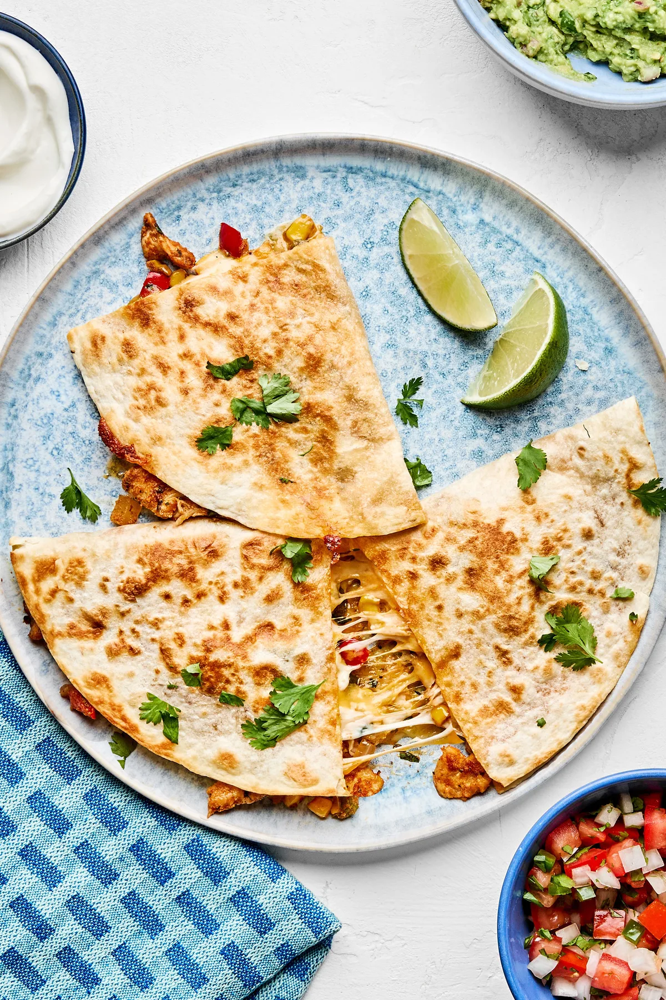

Pizza

Description
These are quesadillas which need no further introduction as they are amazing and delicous
they are the pincale of food and deserve the utmost respect introducing QUESADILLAAAAAAS!!
Ingredients
- 1 tortilla
- Cheese of your choosing
- any desired toping not inlcuding sardines or other foods you are allergic too or do it would be terrible but you would turn red but seriously tho dont do food you are allergic to
Steps
-
Place a tortilla on your stove and cook on medium until it is warmed up
- Flip the tortilla and apply the cheese to the side and any other desired toppings
-
Close your tortilla in half and let it cook for about 2 minutes then flip and let it cook for another 2 minutes
-
take your tortilla off and eat it on the counter as you can't wait to eat the delicous food
Home